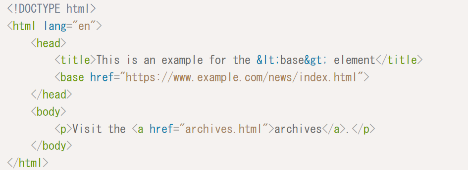

base
ホームページ
head
title
base
説明
カテゴリー: メタデータ コンテンツ。
この要素を使用できるコンテキスト: 他のhead要素を含まないbase要素内。
コンテンツ モデル: 何もありません。
text/html のタグ省略: 終了タグなし。
このbase要素により、作成者は URL を解析する目的でドキュメントのベース URLを指定し、ハイパーリンクをたどる目的でデフォルトの ナビゲート可能な名前を指定できます。この要素は、この情報以外のコンテンツを表していません。
HTMLコード

動作結果
ウェブページにURLを設定することができる。